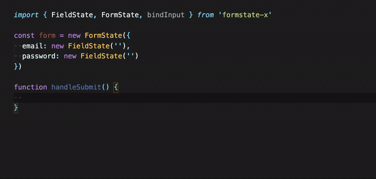

formstate-x


Manage the state of your form with ease, inspired by awesome formstate. formstate-x maintains and validates form state for you, totally automatically.
What we offer:
Type safety: written in Typescript, you can compose complex form state without loss of type information

Reactive: based on MobX, every dependency's change causes reaction automatically and you can easily react to state's change
UI-independent: formstate-x only deals with state / data, you can easily use it with any UI library you like
Documents
Full documents here.
Install
npm i formstate-x
// or
yarn add formstate-xUsage
import { FieldState, FormState, bindInput } from 'formstate-x'
const foo = new FieldState('')
const bar = new FieldState(0)
const form = new FormState({ foo, bar })
// handle submit
async function handleSubmit(e) {
e.preventDefault()
const result = await form.validate()
if (result.hasError) {
alert('Invalid input!')
return
}
// use the validated value
await submitted = submit(result.value)
}
// when render (with react)
<form onSubmit={handleSubmit}>
<FooInput {...bindInput(form.$.foo)}>
<BarInput {...bindInput(form.$.bar)}>
</form>Comparison with formstate
formstate-x provides similar APIs with formstate because we like their simplicity. formstate has a very helpful document which we will recommend you to read. But there are some points of formstate that brought inconvenience to our development, and we got disagreement with formstate in related problems. That's why we build formstate-x:
- formstate uses MobX but not embracing it, which constrained its ability (related issue: #11). formstate-x leverages MobX's power substantially, so we can easily track all dependencies when do validation, including dynamic values or dynamic valdiators. That's also why realizing cross-field validation is extremly easy with formstat-x.
- formstate mixes validated, safe value with readable value (
$), in some cases it's not suitable to use either$orvalue. formstate-x providesvalueas readable value,$as validated and safe value and_valuefor UI binding only. - formstate doesn't provide a good way to extract value from
FormState( related issues: #25 #28). formstate-x providesvalueasFormState's serialized value, with full type info. - formstate dosen't provide a good way to disable part of a
FormState.FormStateLazyis like a hack and very different concept fromFieldState&FormState. formstate-x providesdisableValidationWhento let you realize conditional validation with a single method call.